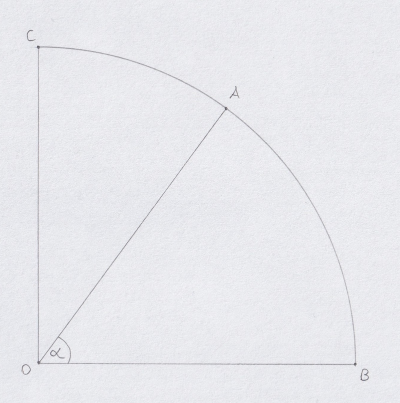
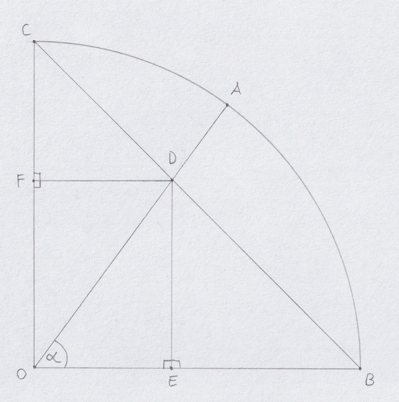
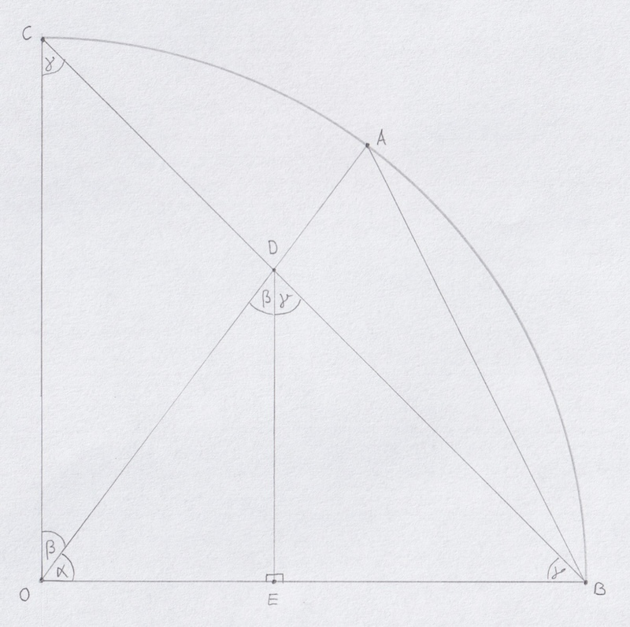
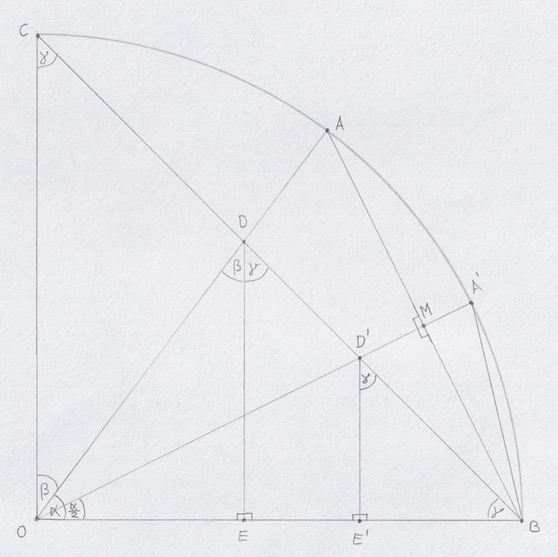
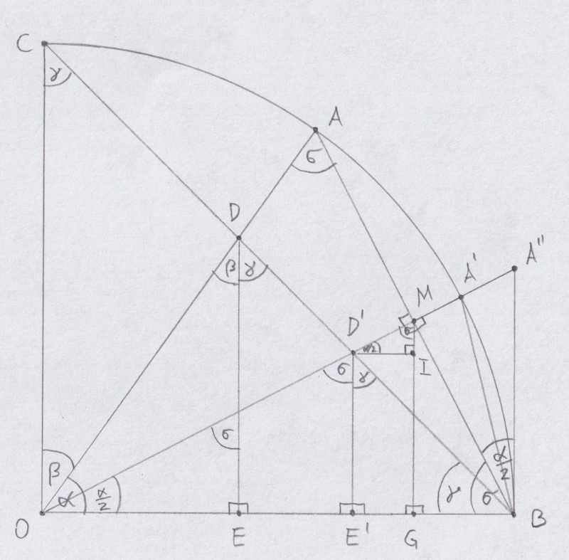

Introduction The following information has been discovered by John Gabriel; you can find out more about him and his works at the New Calculus page, with a direct link to the corresponding article here . While the main idea behind this approach is to move away from degrees or radians, John hinted at the fact that there's a way to directly map between radians and right-angle units in one of his video s, namely at 6:48, as follows:
Somebody asked me: "is there a formula that can convert radians to degrees right angle units?". There is, and I'm not sharing it with you. [...] But I'll give you a clue! For any angle in radians, the arc is equal to the angle if the radius is one. [...] You can take a chord of this arc, and your next step [...] is to find the length of that chord. And then [...] there is a way to find the radical angle unit and also the parameter without any trigonometry [...].
So, within the unit circle, the arc-length equals the angle in radians. If this value can be related to the chord-length without trigonometry, and the chord-length can be related to the parameter, then the radian-value can be converted to the parameter. This implies that there are closed-form versions of the mainstream trigonometric functions , which is why I really want to follow John's clues; my journey will be captured on this site also.
Since trigonometric functions relate similar triangles, there is no need to consider inputs representing angles greater than 90 ° 90° 90° π 4 \frac{\pi}{4} 4 π O O O B B B C C C O B ‾ = O C ‾ = 1 \overline{OB} = \overline{OC} = 1 OB = OC = 1 O A ‾ \overline{OA} O A α = ∠ B O A \alpha = \angle{BOA} α = ∠ BO A

A constructed secant through points B B B C C C 1 2 + 1 2 = 2 \sqrt{1^2 + 1^2} = \sqrt{2} 1 2 + 1 2 = 2 O A ‾ \overline{OA} O A D D D α \alpha α B D ‾ B C ‾ \frac{\overline{BD}}{\overline{BC}} BC B D [ 0 ; 1 ] [0;1] [ 0 ; 1 ] α \alpha α RAU .
Dropping a perpendicular from point D D D O B ‾ \overline{OB} OB E E E O C ‾ \overline{OC} OC F F F

It is now claimed that the ratio B D ‾ B C ‾ \frac{\overline{BD}}{\overline{BC}} BC B D E D ‾ \overline{ED} E D E D ‾ = E B ‾ = O F ‾ \overline{ED} = \overline{EB} = \overline{OF} E D = EB = OF F C ‾ = F D ‾ = O E ‾ \overline{FC} = \overline{FD} = \overline{OE} FC = F D = OE △ F D C \triangle{FDC} △ F D C △ E B D \triangle{EBD} △ EB D △ O E D \triangle{OED} △ OE D △ O D F \triangle{ODF} △ O D F
Due to the fact that O B ‾ = O C ‾ \overline{OB} = \overline{OC} OB = OC ∠ D B O = ∠ O C B \angle{DBO} = \angle{OCB} ∠ D BO = ∠ OCB △ O B C \triangle{OBC} △ OBC γ = π 2 \gamma = \frac{\pi}{2} γ = 2 π α + β = π 2 \alpha + \beta = \frac{\pi}{2} α + β = 2 π △ F D C \triangle{FDC} △ F D C △ E B D \triangle{EBD} △ EB D π − γ = π 2 = γ \pi - \gamma = \frac{\pi}{2} = \gamma π − γ = 2 π = γ
△ E B D ∼ △ O B C ⇒ B D ‾ B C ‾ = E D ‾ O C ‾ = B D ‾ B C ‾ = E D ‾ 1 = B D ‾ B C ‾ = E D ‾
\begin{align*}
\triangle{EBD} \sim \triangle{OBC} &\Rightarrow \frac{\overline{BD}}{\overline{BC}} = \frac{\overline{ED}}{\overline{OC}} \\
&= \frac{\overline{BD}}{\overline{BC}} = \frac{\overline{ED}}{1} \\
&= \frac{\overline{BD}}{\overline{BC}} = \overline{ED}
\end{align*}
△ EB D ∼ △ OBC ⇒ BC B D = OC E D = BC B D = 1 E D = BC B D = E D
The value sin ( α ) \sin(\alpha) sin ( α ) cos ( α ) \cos(\alpha) cos ( α ) tan ( α ) \tan(\alpha) tan ( α )
The second short-side of △ O E D \triangle{OED} △ OE D
O E ‾ = O B ‾ − E B ‾ = 1 − E B ‾ = 1 − E D ‾
\begin{align*}
\overline{OE} &= \overline{OB} - \overline{EB} \\
&= 1 - \overline{EB} \\
&= 1 - \overline{ED}
\end{align*}
OE = OB − EB = 1 − EB = 1 − E D
with the hypothenuse being
O D ‾ 2 = O E ‾ 2 + E D ‾ 2 = ( 1 − E D ‾ ) 2 + E D ‾ 2 = 1 − 2 ∗ E D ‾ + E D ‾ 2 + E D ‾ 2 = 1 − 2 ∗ E D ‾ + 2 ∗ E D ‾ 2 O D ‾ = 1 − 2 ∗ E D ‾ + 2 ∗ E D ‾ 2
\begin{align*}
\overline{OD}^2 &= \overline{OE}^2 + \overline{ED}^2 \\
&= (1 - \overline{ED})^2 + \overline{ED}^2 \\
&= 1 - 2*\overline{ED} + \overline{ED}^2 + \overline{ED}^2 \\
&= 1 - 2*\overline{ED} + 2*\overline{ED}^2 \\
\overline{OD} &= \sqrt{1 - 2*\overline{ED} + 2*\overline{ED}^2} \\
\end{align*}
O D 2 O D = OE 2 + E D 2 = ( 1 − E D ) 2 + E D 2 = 1 − 2 ∗ E D + E D 2 + E D 2 = 1 − 2 ∗ E D + 2 ∗ E D 2 = 1 − 2 ∗ E D + 2 ∗ E D 2
Thus, sin ( α ) \sin(\alpha) sin ( α )
s i n e ( E D ‾ ) = E D ‾ 1 − 2 ∗ E D ‾ + 2 ∗ E D ‾ 2
\mathrm{sine}(\overline{ED}) = \frac{\overline{ED}}{\sqrt{1 - 2*\overline{ED} + 2*\overline{ED}^2}}
sine ( E D ) = 1 − 2 ∗ E D + 2 ∗ E D 2 E D
and cos ( α ) \cos(\alpha) cos ( α )
c o s i n e ( E D ‾ ) = 1 − E D ‾ 1 − 2 ∗ E D ‾ + 2 ∗ E D ‾ 2
\mathrm{cosine}(\overline{ED}) = \frac{1 - \overline{ED}}{\sqrt{1 - 2*\overline{ED} + 2*\overline{ED}^2}}
cosine ( E D ) = 1 − 2 ∗ E D + 2 ∗ E D 2 1 − E D
and tan ( α ) \tan(\alpha) tan ( α )
t a n g e n t ( E D ‾ ) = E D ‾ 1 − E D ‾
\mathrm{tangent}(\overline{ED}) = \frac{\overline{ED}}{1-\overline{ED}}
tangent ( E D ) = 1 − E D E D
Chord-Length By Radians WARNING: This section is still a work-in-progress and does not yet represent the final result.
The goal is to algebraically express the chord-length B A ‾ \overline{BA} B A α \alpha α
Let M M M A A A B B B O O O M M M △ O B M \triangle{OBM} △ OBM △ O M A \triangle{OMA} △ OM A
Within △ O B M \triangle{OBM} △ OBM
sin ( α 2 ) = B M ‾ O B ‾ = B M ‾
\begin{align*}
\sin\left(\frac{\alpha}{2}\right) &= \frac{\overline{BM}}{\overline{OB}} \\
&= \overline{BM}
\end{align*}
sin ( 2 α ) = OB BM = BM
From which follows, that
B A ‾ = 2 ∗ B M ‾ B A ‾ = 2 ∗ sin ( α 2 )
\begin{align*}
\overline{BA} &= 2*\overline{BM} \\
\overline{BA} &= 2*\sin\left(\frac{\alpha}{2}\right)
\end{align*}
B A B A = 2 ∗ BM = 2 ∗ sin ( 2 α )
Parameter By Chord-Length The goal is to algebraically express the parameter of all formulas, namely E D ‾ \overline{ED} E D B A ‾ \overline{BA} B A α \alpha α α \alpha α

At first glance, this may seem like an impossible task, but since the scene at hand is fully geometrically defined for each length of B A ‾ \overline{BA} B A E D ‾ \overline{ED} E D M M M A A A B B B O O O M M M O M ‾ \overline{OM} OM α \alpha α A ′ A' A ′ B C ‾ \overline{BC} BC D ′ D' D ′ E ′ E' E ′ B B B A ′ A' A ′

It now becomes apparent that as B A ‾ \overline{BA} B A α \alpha α E D ‾ \overline{ED} E D B A ′ ‾ \overline{BA'} B A ′ α 2 \frac{\alpha}{2} 2 α E ′ D ′ ‾ \overline{E'D'} E ′ D ′
As dictated by △ O E ′ D ′ \triangle{OE'D'} △ O E ′ D ′ σ = π 2 − α 2 \sigma = \frac{\pi}{2} - \frac{\alpha}{2} σ = 2 π − 2 α △ O B M \triangle{OBM} △ OBM α 2 \frac{\alpha}{2} 2 α △ O E ′ D ′ \triangle{OE'D'} △ O E ′ D ′ σ \sigma σ △ O M A \triangle{OMA} △ OM A
△ E ′ B D ′ ∼ △ E B D ⇒ E ′ B ‾ E B ‾ = E ′ D ′ ‾ E D ‾ = B D ′ ‾ B D ‾ △ O B M ∼ △ O E ′ D ′ ⇒ B M ‾ E ′ D ′ ‾ = O B ‾ O D ′ ‾ = O M ‾ O E ′ ‾
\begin{align*}
\triangle{E'BD'} \sim \triangle{EBD} &\Rightarrow \frac{\overline{E'B}}{\overline{EB}} = \frac{\overline{E'D'}}{\overline{ED}} = \frac{\overline{BD'}}{\overline{BD}} \tag{1} \\
\,\\
\triangle{OBM} \sim \triangle{OE'D'} &\Rightarrow \frac{\overline{BM}}{\overline{E'D'}} = \frac{\overline{OB}}{\overline{OD'}} = \frac{\overline{OM}}{\overline{OE'}} \tag{2}
\end{align*}
△ E ′ B D ′ ∼ △ EB D △ OBM ∼ △ O E ′ D ′ ⇒ EB E ′ B = E D E ′ D ′ = B D B D ′ ⇒ E ′ D ′ BM = O D ′ OB = O E ′ OM ( 1 ) ( 2 )
Right-angle triangles allow for the application of the Pythagorean Theorem.
△ E ′ B D ′ ⇒ 2 ∗ E ′ D ′ ‾ 2 = B D ′ ‾ 2 △ E B D ⇒ 2 ∗ E D ‾ 2 = B D ‾ △ O E ′ D ′ ⇒ O E ′ ‾ 2 + E ′ D ′ ‾ 2 = O D ′ ‾ 2 △ O E D ⇒ O E ‾ 2 + E D ‾ 2 = O D ‾ 2 △ B A ′ M ⇒ B M ‾ 2 + M A ′ ‾ 2 = B A ′ ‾ 2 △ O B M ⇒ O M ‾ 2 + B M ‾ 2 = O B ‾ 2 △ B M D ′ ⇒ B M ‾ 2 + D ′ M ‾ 2 = B D ′ ‾ 2
\begin{align*}
\triangle{E'BD'} &\Rightarrow 2 * \overline{E'D'}^2 = \overline{BD'}^2 \tag{3} \\
\triangle{EBD} &\Rightarrow 2 * \overline{ED}^2 = \overline{BD} \tag{4} \\
\triangle{OE'D'} &\Rightarrow \overline{OE'}^2 + \overline{E'D'}^2 = \overline{OD'}^2 \tag{5} \\
\triangle{OED} &\Rightarrow \overline{OE}^2 + \overline{ED}^2 = \overline{OD}^2 \tag{6} \\
\triangle{BA'M} &\Rightarrow \overline{BM}^2 + \overline{MA'}^2 = \overline{BA'}^2 \tag{7} \\
\triangle{OBM} &\Rightarrow \overline{OM}^2 + \overline{BM}^2 = \overline{OB}^2 \tag{8} \\
\triangle{BMD'} &\Rightarrow \overline{BM}^2 + \overline{D'M}^2 = \overline{BD'}^2 \tag{9}
\end{align*}
△ E ′ B D ′ △ EB D △ O E ′ D ′ △ OE D △ B A ′ M △ OBM △ BM D ′ ⇒ 2 ∗ E ′ D ′ 2 = B D ′ 2 ⇒ 2 ∗ E D 2 = B D ⇒ O E ′ 2 + E ′ D ′ 2 = O D ′ 2 ⇒ OE 2 + E D 2 = O D 2 ⇒ BM 2 + M A ′ 2 = B A ′ 2 ⇒ OM 2 + BM 2 = OB 2 ⇒ BM 2 + D ′ M 2 = B D ′ 2 ( 3 ) ( 4 ) ( 5 ) ( 6 ) ( 7 ) ( 8 ) ( 9 )
Drop a perpendicular from M M M G G G
We know that
△ O G M ∼ △ G B M ⇒ O G ‾ G M ‾ = G M ‾ G B ‾ = O M ‾ B M ‾ △ O G M ⇒ O G ‾ 2 + G M ‾ 2 = O M ‾ 2 △ G B M ⇒ G M ‾ 2 + G B ‾ 2 = B M ‾ 2
\begin{align*}
\triangle{OGM} \sim \triangle{GBM} &\Rightarrow \frac{\overline{OG}}{\overline{GM}} = \frac{\overline{GM}}{\overline{GB}} = \frac{\overline{OM}}{\overline{BM}} \tag{10} \\
\, \\
\triangle{OGM} &\Rightarrow \overline{OG}^2 + \overline{GM}^2 = \overline{OM}^2 \tag{11}
\, \\
\triangle{GBM} &\Rightarrow \overline{GM}^2 + \overline{GB}^2 = \overline{BM}^2 \tag{12}
\end{align*}
△ OGM ∼ △ GBM △ OGM △ GBM ⇒ GM OG = GB GM = BM OM ⇒ OG 2 + GM 2 = OM 2 ⇒ GM 2 + GB 2 = BM 2 ( 10 ) ( 11 ) ( 12 )
Drop a perpendicular from D ′ D' D ′ G M ‾ \overline{GM} GM I I I
Another right triangle emerges, with the following sides:
I M ‾ = G M ‾ − E ′ D ′ ‾ D ′ I ‾ = E ′ G ‾
\begin{align*}
\overline{IM} &= \overline{GM} - \overline{E'D'} \\
\overline{D'I} &= \overline{E'G} \\
\end{align*}
I M D ′ I = GM − E ′ D ′ = E ′ G
By applying the above relations, we receive
△ D ′ I M ⇒ D ′ I ‾ 2 + I M ‾ 2 = D ′ M ‾ 2 ⇔ E ′ G ‾ 2 + ( G M ‾ − E ′ D ′ ‾ ) 2 = D ′ M ‾ 2
\begin{align*}
\triangle{D'IM} &\Rightarrow \overline{D'I}^2 + \overline{IM}^2 = \overline{D'M}^2 \Leftrightarrow \overline{E'G}^2 + (\overline{GM} - \overline{E'D'})^2 = \overline{D'M}^2 \tag{13}
\end{align*}
△ D ′ I M ⇒ D ′ I 2 + I M 2 = D ′ M 2 ⇔ E ′ G 2 + ( GM − E ′ D ′ ) 2 = D ′ M 2 ( 13 )
With the following similarities
△ O E ′ D ′ ∼ △ D ′ I M ⇒ O E ′ ‾ E ′ G ‾ = E ′ D ′ ‾ G M ‾ − E ′ D ′ ‾ = O D ′ ‾ D ′ M ‾ △ O G M ∼ △ D ′ I M ⇒ O G ‾ E ′ G ‾ = G M ‾ G M ‾ − E ′ D ′ ‾ ‾ = O M ‾ D ′ M ‾
\begin{align*}
\triangle{OE'D'} \sim \triangle{D'IM} &\Rightarrow \frac{\overline{OE'}}{\overline{E'G}} = \frac{\overline{E'D'}}{\overline{GM} - \overline{E'D'}} = \frac{\overline{OD'}}{\overline{D'M}} \tag{14} \\
\,\\
\triangle{OGM} \sim \triangle{D'IM} &\Rightarrow \frac{\overline{OG}}{\overline{E'G}} = \frac{\overline{GM}}{\overline{\overline{GM} - \overline{E'D'}}} = \frac{\overline{OM}}{\overline{D'M}} \tag{15}
\end{align*}
△ O E ′ D ′ ∼ △ D ′ I M △ OGM ∼ △ D ′ I M ⇒ E ′ G O E ′ = GM − E ′ D ′ E ′ D ′ = D ′ M O D ′ ⇒ E ′ G OG = GM − E ′ D ′ GM = D ′ M OM ( 14 ) ( 15 )
( 8 ) ⇒ O M ‾ 2 + B M ‾ 2 = 1 ( 1 − M A ′ ‾ ) 2 + B M ‾ 2 = 1 ( 1 − M A ′ ‾ ) 2 = 1 − B M ‾ 2 1 − M A ′ ‾ = 1 − B M ‾ 2 − M A ′ ‾ = 1 − B M ‾ 2 − 1 M A ′ ‾ = 1 − 1 − B M ‾ 2
\begin{align*}
(\text{8}) \Rightarrow \overline{OM}^2 + \overline{BM}^2 &= 1 \\
(1 - \overline{MA'})^2 + \overline{BM}^2 &= 1 \\
(1 - \overline{MA'})^2 &= 1 - \overline{BM}^2 \\
1 - \overline{MA'} &= \sqrt{1 - \overline{BM}^2} \\
-\overline{MA'} &= \sqrt{1 - \overline{BM}^2} - 1 \\
\overline{MA'} &= 1 - \sqrt{1 - \overline{BM}^2} \tag{16} \\
\end{align*}
( 8 ) ⇒ OM 2 + BM 2 ( 1 − M A ′ ) 2 + BM 2 ( 1 − M A ′ ) 2 1 − M A ′ − M A ′ M A ′ = 1 = 1 = 1 − BM 2 = 1 − BM 2 = 1 − BM 2 − 1 = 1 − 1 − BM 2 ( 16 )
( 16 ) → ( 7 ) ⇒ B A ′ ‾ 2 = B M ‾ 2 + M A ′ ‾ 2 B A ′ ‾ 2 = B M ‾ 2 + ( 1 − 1 − B M ‾ 2 ) 2 B A ′ ‾ 2 = B M ‾ 2 + 1 − 2 ∗ 1 − B M ‾ 2 + 1 − B M ‾ 2 B A ′ ‾ 2 = 2 − 2 ∗ 1 − B M ‾ 2 B A ′ ‾ 2 = 2 ∗ ( 1 − 1 − B M ‾ 2 ) B A ′ ‾ = 2 ∗ ( 1 − 1 − B M ‾ 2 ) B A ′ ‾ = 2 ∗ M A ′ ‾
\begin{align*}
(\text{16}) \rightarrow (\text{7}) \Rightarrow \overline{BA'}^2 &= \overline{BM}^2 + \overline{MA'}^2 \\
\overline{BA'}^2 &= \overline{BM}^2 + \left(1 - \sqrt{1 - \overline{BM}^2}\right)^2 \\
\overline{BA'}^2 &= \cancel{\overline{BM}^2} + 1 - 2*\sqrt{1 - \overline{BM}^2} + 1 - \cancel{\overline{BM}^2} \\
\overline{BA'}^2 &= 2 - 2*\sqrt{1 - \overline{BM}^2} \\
\overline{BA'}^2 &= 2 * \left(1 - \sqrt{1 - \overline{BM}^2}\right) \\
\overline{BA'} &= \sqrt{2 * \left(1 - \sqrt{1 - \overline{BM}^2}\right)} \\
\overline{BA'} &= \sqrt{2 * \overline{MA'}} \tag{17} \\
\end{align*}
( 16 ) → ( 7 ) ⇒ B A ′ 2 B A ′ 2 B A ′ 2 B A ′ 2 B A ′ 2 B A ′ B A ′ = BM 2 + M A ′ 2 = BM 2 + ( 1 − 1 − BM 2 ) 2 = BM 2 + 1 − 2 ∗ 1 − BM 2 + 1 − BM 2 = 2 − 2 ∗ 1 − BM 2 = 2 ∗ ( 1 − 1 − BM 2 ) = 2 ∗ ( 1 − 1 − BM 2 ) = 2 ∗ M A ′ ( 17 )
( 10 ) ⇒ O G ‾ G M ‾ = G M ‾ G B ‾ G M ‾ 2 = O G ‾ ∗ G B ‾ G M ‾ 2 = ( 1 − G B ‾ ) ∗ G B ‾ G M ‾ 2 = G B ‾ − G B ‾ 2
\begin{align*}
(\text{10}) \Rightarrow \frac{\overline{OG}}{\overline{GM}} &= \frac{\overline{GM}}{\overline{GB}} \\
\overline{GM}^2 &= \overline{OG} * \overline{GB} \\
\overline{GM}^2 &= (1-\overline{GB}) * \overline{GB} \\
\overline{GM}^2 &= \overline{GB} - \overline{GB}^2 \tag{10a}
\end{align*}
( 10 ) ⇒ GM OG GM 2 GM 2 GM 2 = GB GM = OG ∗ GB = ( 1 − GB ) ∗ GB = GB − GB 2 ( 10a )
( 10a ) = ( 12 ) ⇒ G B ‾ − G B ‾ 2 = B M ‾ 2 − G B ‾ 2 G B ‾ = B M ‾ 2
\begin{align*}
(\text{10a}) = (\text{12}) \Rightarrow \overline{GB} - \cancel{\overline{GB}^2} &= \overline{BM}^2 - \cancel{\overline{GB}^2} \\
\overline{GB} &= \overline{BM}^2 \tag{18}
\end{align*}
( 10a ) = ( 12 ) ⇒ GB − GB 2 GB = BM 2 − GB 2 = BM 2 ( 18 )
( 16 ) , ( 10a ) , ( 18 ) → ( 11 ) ⇒ O G ‾ 2 = ( 1 − M A ′ ‾ ) 2 − G M ‾ 2 O G ‾ 2 = ( 1 − ( 1 − 1 − B M ‾ 2 ) ) 2 − ( G B ‾ − G B ‾ 2 ) O G ‾ 2 = 1 − B M ‾ 2 − ( B M ‾ 2 − B M ‾ 4 ) O G ‾ 2 = 1 − 2 ∗ B M ‾ 2 + B M ‾ 4 O G ‾ 2 = ( 1 − B M ‾ 2 ) 2 O G ‾ = 1 − B M ‾ 2
\begin{align*}
(\text{16}),(\text{10a}),(\text{18}) \rightarrow (\text{11}) \Rightarrow \overline{OG}^2 &= (1 - \overline{MA'})^2 - \overline{GM}^2 \\
\overline{OG}^2 &= (1 - (1 - \sqrt{1 - \overline{BM}^2}))^2 - (\overline{GB} - \overline{GB}^2) \\
\overline{OG}^2 &= 1 - \overline{BM}^2 - (\overline{BM}^2 - \overline{BM}^4) \\
\overline{OG}^2 &= 1 - 2*\overline{BM}^2 + \overline{BM}^4 \\
\overline{OG}^2 &= (1 - \overline{BM}^2)^2 \\
\overline{OG} &= 1 - \overline{BM}^2 \tag{19} \\
\end{align*}
( 16 ) , ( 10a ) , ( 18 ) → ( 11 ) ⇒ OG 2 OG 2 OG 2 OG 2 OG 2 OG = ( 1 − M A ′ ) 2 − GM 2 = ( 1 − ( 1 − 1 − BM 2 ) ) 2 − ( GB − GB 2 ) = 1 − BM 2 − ( BM 2 − BM 4 ) = 1 − 2 ∗ BM 2 + BM 4 = ( 1 − BM 2 ) 2 = 1 − BM 2 ( 19 )
( 16 ) , ( 19 ) → ( 15 ) ⇒ E ′ G ‾ O G ‾ = D ′ M ‾ O M ‾ E ′ G ‾ = O G ‾ ∗ D ′ M ‾ 1 − M A ′ ‾ E ′ G ‾ = ( 1 − B M ‾ 2 ) ∗ D ′ M ‾ 1 − ( 1 − 1 − B M ‾ 2 ) E ′ G ‾ = ( 1 − B M ‾ 2 ) ∗ D ′ M ‾ 1 − B M ‾ 2 E ′ G ‾ = ( 1 − B M ‾ 2 ) ∗ D ′ M ‾ ∗ 1 − B M ‾ 2 1 − B M ‾ 2 E ′ G ‾ = D ′ M ‾ ∗ 1 − B M ‾ 2 ⇔ D ′ M ‾ = E ′ G ‾ 1 − B M ‾ 2
\begin{align*}
(\text{16}),(\text{19}) \rightarrow (\text{15}) \Rightarrow \frac{\overline{E'G}}{\overline{OG}} &= \frac{\overline{D'M}}{\overline{OM}} \\
\overline{E'G} &= \overline{OG} * \frac{\overline{D'M}}{1 - \overline{MA'}} \\
\overline{E'G} &= (1 - \overline{BM}^2) * \frac{\overline{D'M}}{\cancel{1} - (\cancel{1} - \sqrt{1 - \overline{BM}^2})} \\
\overline{E'G} &= (1 - \overline{BM}^2) * \frac{\overline{D'M}}{\sqrt{1 - \overline{BM}^2}} \\
\overline{E'G} &= \cancel{(1 - \overline{BM}^2)} * \frac{\overline{D'M} * \sqrt{1 - \overline{BM}^2}}{\cancel{1 - \overline{BM}^2}} \\
\overline{E'G} &= \overline{D'M} * \sqrt{1 - \overline{BM}^2} \Leftrightarrow \overline{D'M} = \frac{\overline{E'G}}{\sqrt{1 - \overline{BM}^2}} \tag{20}
\end{align*}
( 16 ) , ( 19 ) → ( 15 ) ⇒ OG E ′ G E ′ G E ′ G E ′ G E ′ G E ′ G = OM D ′ M = OG ∗ 1 − M A ′ D ′ M = ( 1 − BM 2 ) ∗ 1 − ( 1 − 1 − BM 2 ) D ′ M = ( 1 − BM 2 ) ∗ 1 − BM 2 D ′ M = ( 1 − BM 2 ) ∗ 1 − BM 2 D ′ M ∗ 1 − BM 2 = D ′ M ∗ 1 − BM 2 ⇔ D ′ M = 1 − BM 2 E ′ G ( 20 )
( 16 ) , ( 19 ) , ( 20 ) → ( 5 ) ⇒ O D ′ ‾ 2 = O E ′ ‾ 2 + E ′ D ′ ‾ 2 ( 1 − D ′ M ‾ − M A ′ ‾ ) 2 = O E ′ ‾ 2 + E ′ B ‾ 2 ( 1 − D ′ M ‾ − M A ′ ‾ ) 2 = O E ′ ‾ 2 + ( E ′ G ‾ + G B ‾ ) 2 ( 1 − D ′ M ‾ − ( 1 − 1 − B M ‾ 2 ) ) 2 = O E ′ ‾ 2 + ( E ′ G ‾ + B M ‾ 2 ) 2 ( 1 − B M ‾ 2 − D ′ M ‾ ) 2 = O E ′ ‾ 2 + ( E ′ G ‾ + B M ‾ 2 ) 2 ( 1 − B M ‾ 2 − D ′ M ‾ ) 2 = ( O G ‾ − E ′ G ‾ ) 2 + ( E ′ G ‾ + B M ‾ 2 ) 2 ( 1 − B M ‾ 2 − D ′ M ‾ ) 2 = ( ( 1 − B M ‾ 2 ) − E ′ G ‾ ) 2 + ( E ′ G ‾ + B M ‾ 2 ) 2 ( 1 − B M ‾ 2 − D ′ M ‾ ) 2 = ( 1 − B M ‾ 2 ) 2 − 2 ∗ ( 1 − B M ‾ 2 ) ∗ E ′ G ‾ + E ′ G ‾ 2 + ( E ′ G ‾ + B M ‾ 2 ) 2 ( 1 − B M ‾ 2 − D ′ M ‾ ) 2 = ( 1 − B M ‾ 2 ) 2 − 2 ∗ ( 1 − B M ‾ 2 ) ∗ E ′ G ‾ + E ′ G ‾ 2 + E ′ G ‾ 2 + 2 ∗ E ′ G ‾ ∗ B M ‾ 2 + B M ‾ 4 ( 1 − B M ‾ 2 − D ′ M ‾ ) 2 = 2 ∗ E ′ G ‾ 2 − E ′ G ‾ ∗ ( 2 ∗ ( 1 − B M ‾ 2 ) − 2 ∗ B M ‾ 2 ) + ( 1 − B M ‾ 2 ) 2 + B M ‾ 4 ( 1 − B M ‾ 2 − D ′ M ‾ ) 2 = 2 ∗ E ′ G ‾ 2 − E ′ G ‾ ∗ ( 2 − 4 ∗ B M ‾ 2 ) + ( 1 − B M ‾ 2 ) 2 + B M ‾ 4 ( 1 − B M ‾ 2 − D ′ M ‾ ) 2 = 2 ∗ E ′ G ‾ 2 − E ′ G ‾ ∗ ( 2 − 4 ∗ B M ‾ 2 ) + 1 − 2 ∗ B M ‾ 2 + 2 ∗ B M ‾ 4 ( 1 − B M ‾ 2 − E ′ G ‾ 1 − B M ‾ 2 ) 2 = 2 ∗ E ′ G ‾ 2 − E ′ G ‾ ∗ ( 2 − 4 ∗ B M ‾ 2 ) + 1 − 2 ∗ B M ‾ 2 + 2 ∗ B M ‾ 4 1 − B M ‾ 2 − 2 ∗ E ′ G ‾ + E ′ G ‾ 2 1 − B M ‾ 2 = 2 ∗ E ′ G ‾ 2 − E ′ G ‾ ∗ ( 2 − 4 ∗ B M ‾ 2 ) + 1 − 2 ∗ B M ‾ 2 + 2 ∗ B M ‾ 4 − 2 ∗ E ′ G ‾ + E ′ G ‾ 2 1 − B M ‾ 2 = 2 ∗ E ′ G ‾ 2 − E ′ G ‾ ∗ ( 2 − 4 ∗ B M ‾ 2 ) − B M ‾ 2 + 2 ∗ B M ‾ 4 E ′ G ‾ 2 1 − B M ‾ 2 = 2 ∗ E ′ G ‾ 2 + E ′ G ‾ ∗ ( 4 ∗ B M ‾ 2 ) − B M ‾ 2 + 2 ∗ B M ‾ 4 0 = 2 ∗ E ′ G ‾ 2 − E ′ G ‾ 2 1 − B M ‾ 2 + E ′ G ‾ ∗ ( 4 ∗ B M ‾ 2 ) − B M ‾ 2 + 2 ∗ B M ‾ 4 0 = E ′ G ‾ 2 ∗ ( 2 − 1 1 − B M ‾ 2 ) + E ′ G ‾ ∗ ( 4 ∗ B M ‾ 2 ) − B M ‾ 2 + 2 ∗ B M ‾ 4
\begin{align*}
(\text{16}),(\text{19}),(\text{20}) \rightarrow (\text{5}) \Rightarrow \overline{OD'}^2 &= \overline{OE'}^2 + \overline{E'D'}^2 \\
(1 - \overline{D'M} - \overline{MA'})^2 &= \overline{OE'}^2 + \overline{E'B}^2 \\
(1 - \overline{D'M} - \overline{MA'})^2 &= \overline{OE'}^2 + (\overline{E'G} + \overline{GB})^2 \\
(\cancel{1} - \overline{D'M} - (\cancel{1} - \sqrt{1 - \overline{BM}^2}))^2 &= \overline{OE'}^2 + (\overline{E'G} + \overline{BM}^2)^2 \\
(\sqrt{1 - \overline{BM}^2} - \overline{D'M})^2 &= \overline{OE'}^2 + (\overline{E'G} + \overline{BM}^2)^2 \\
(\sqrt{1 - \overline{BM}^2} - \overline{D'M})^2 &= (\overline{OG} - \overline{E'G})^2 + (\overline{E'G} + \overline{BM}^2)^2 \\
(\sqrt{1 - \overline{BM}^2} - \overline{D'M})^2 &= ((1 - \overline{BM}^2) - \overline{E'G})^2 + (\overline{E'G} + \overline{BM}^2)^2 \\
(\sqrt{1 - \overline{BM}^2} - \overline{D'M})^2 &= (1 - \overline{BM}^2)^2 - 2*(1 - \overline{BM}^2)*\overline{E'G} + \overline{E'G}^2 + (\overline{E'G} + \overline{BM}^2)^2 \\
(\sqrt{1 - \overline{BM}^2} - \overline{D'M})^2 &= (1 - \overline{BM}^2)^2 - 2*(1 - \overline{BM}^2)*\overline{E'G} + \overline{E'G}^2 + \overline{E'G}^2 + 2*\overline{E'G}*\overline{BM}^2 + \overline{BM}^4 \\
(\sqrt{1 - \overline{BM}^2} - \overline{D'M})^2 &= 2*\overline{E'G}^2 - \overline{E'G}*(2*(1 - \overline{BM}^2) - 2*\overline{BM}^2) + (1 - \overline{BM}^2)^2 + \overline{BM}^4 \\
(\sqrt{1 - \overline{BM}^2} - \overline{D'M})^2 &= 2*\overline{E'G}^2 - \overline{E'G}*(2 - 4*\overline{BM}^2) + (1 - \overline{BM}^2)^2 + \overline{BM}^4 \\
(\sqrt{1 - \overline{BM}^2} - \overline{D'M})^2 &= 2*\overline{E'G}^2 - \overline{E'G}*(2 - 4*\overline{BM}^2) + 1 - 2*\overline{BM}^2 + 2*\overline{BM}^4 \\
(\sqrt{1 - \overline{BM}^2} - \frac{\overline{E'G}}{\sqrt{1-\overline{BM}^2}})^2 &= 2*\overline{E'G}^2 - \overline{E'G}*(2 - 4*\overline{BM}^2) + 1 - 2*\overline{BM}^2 + 2*\overline{BM}^4 \\
\cancel{1} - \cancel{\overline{BM}^2} - 2*\overline{E'G} + \frac{\overline{E'G}^2}{1-\overline{BM}^2} &= 2*\overline{E'G}^2 - \overline{E'G}*(2 - 4*\overline{BM}^2) + \cancel{1} - \cancel{2}*\overline{BM}^2 + 2*\overline{BM}^4 \\
\cancel{-2*\overline{E'G}} + \frac{\overline{E'G}^2}{1-\overline{BM}^2} &= 2*\overline{E'G}^2 - \overline{E'G}*(\cancel{2} - 4*\overline{BM}^2) - \overline{BM}^2 + 2*\overline{BM}^4 \\
\frac{\overline{E'G}^2}{1-\overline{BM}^2} &= 2*\overline{E'G}^2 + \overline{E'G}*(4*\overline{BM}^2) - \overline{BM}^2 + 2*\overline{BM}^4 \\
0 &= 2*\overline{E'G}^2 - \frac{\overline{E'G}^2}{1-\overline{BM}^2} + \overline{E'G}*(4*\overline{BM}^2) - \overline{BM}^2 + 2*\overline{BM}^4 \\
0 &= \overline{E'G}^2 * (2 - \frac{1}{1-\overline{BM}^2}) + \overline{E'G}*(4*\overline{BM}^2) - \overline{BM}^2 + 2*\overline{BM}^4 \\
\end{align*}
( 16 ) , ( 19 ) , ( 20 ) → ( 5 ) ⇒ O D ′ 2 ( 1 − D ′ M − M A ′ ) 2 ( 1 − D ′ M − M A ′ ) 2 ( 1 − D ′ M − ( 1 − 1 − BM 2 ) ) 2 ( 1 − BM 2 − D ′ M ) 2 ( 1 − BM 2 − D ′ M ) 2 ( 1 − BM 2 − D ′ M ) 2 ( 1 − BM 2 − D ′ M ) 2 ( 1 − BM 2 − D ′ M ) 2 ( 1 − BM 2 − D ′ M ) 2 ( 1 − BM 2 − D ′ M ) 2 ( 1 − BM 2 − D ′ M ) 2 ( 1 − BM 2 − 1 − BM 2 E ′ G ) 2 1 − BM 2 − 2 ∗ E ′ G + 1 − BM 2 E ′ G 2 − 2 ∗ E ′ G + 1 − BM 2 E ′ G 2 1 − BM 2 E ′ G 2 0 0 = O E ′ 2 + E ′ D ′ 2 = O E ′ 2 + E ′ B 2 = O E ′ 2 + ( E ′ G + GB ) 2 = O E ′ 2 + ( E ′ G + BM 2 ) 2 = O E ′ 2 + ( E ′ G + BM 2 ) 2 = ( OG − E ′ G ) 2 + ( E ′ G + BM 2 ) 2 = (( 1 − BM 2 ) − E ′ G ) 2 + ( E ′ G + BM 2 ) 2 = ( 1 − BM 2 ) 2 − 2 ∗ ( 1 − BM 2 ) ∗ E ′ G + E ′ G 2 + ( E ′ G + BM 2 ) 2 = ( 1 − BM 2 ) 2 − 2 ∗ ( 1 − BM 2 ) ∗ E ′ G + E ′ G 2 + E ′ G 2 + 2 ∗ E ′ G ∗ BM 2 + BM 4 = 2 ∗ E ′ G 2 − E ′ G ∗ ( 2 ∗ ( 1 − BM 2 ) − 2 ∗ BM 2 ) + ( 1 − BM 2 ) 2 + BM 4 = 2 ∗ E ′ G 2 − E ′ G ∗ ( 2 − 4 ∗ BM 2 ) + ( 1 − BM 2 ) 2 + BM 4 = 2 ∗ E ′ G 2 − E ′ G ∗ ( 2 − 4 ∗ BM 2 ) + 1 − 2 ∗ BM 2 + 2 ∗ BM 4 = 2 ∗ E ′ G 2 − E ′ G ∗ ( 2 − 4 ∗ BM 2 ) + 1 − 2 ∗ BM 2 + 2 ∗ BM 4 = 2 ∗ E ′ G 2 − E ′ G ∗ ( 2 − 4 ∗ BM 2 ) + 1 − 2 ∗ BM 2 + 2 ∗ BM 4 = 2 ∗ E ′ G 2 − E ′ G ∗ ( 2 − 4 ∗ BM 2 ) − BM 2 + 2 ∗ BM 4 = 2 ∗ E ′ G 2 + E ′ G ∗ ( 4 ∗ BM 2 ) − BM 2 + 2 ∗ BM 4 = 2 ∗ E ′ G 2 − 1 − BM 2 E ′ G 2 + E ′ G ∗ ( 4 ∗ BM 2 ) − BM 2 + 2 ∗ BM 4 = E ′ G 2 ∗ ( 2 − 1 − BM 2 1 ) + E ′ G ∗ ( 4 ∗ BM 2 ) − BM 2 + 2 ∗ BM 4
Let's express E ′ G ‾ \overline{E'G} E ′ G B M ‾ \overline{BM} BM
a = ( 2 − 1 1 − B M ‾ 2 ) b = ( 4 ∗ B M ‾ 2 ) c = ( 2 ∗ B M ‾ 4 − B M ‾ 2 )
a = (2-\frac{1}{1-\overline{BM}^2}) \\
b = (4*\overline{BM}^2) \\
c = (2*\overline{BM}^4 - \overline{BM}^2) \\
a = ( 2 − 1 − BM 2 1 ) b = ( 4 ∗ BM 2 ) c = ( 2 ∗ BM 4 − BM 2 )
yielding
E ′ G ‾ 1 , 2 = − b ± b 2 − 4 ∗ a ∗ c 2 ∗ a = − ( 4 ∗ B M ‾ 2 ) ± ( 4 ∗ B M ‾ 2 ) 2 − 4 ∗ ( 2 − 1 1 − B M ‾ 2 ) ∗ ( 2 ∗ B M ‾ 4 − B M ‾ 2 ) 2 ∗ ( 2 − 1 1 − B M ‾ 2 ) = − 4 ∗ B M ‾ 2 ± 16 ∗ B M ‾ 4 − 4 ∗ ( 2 ∗ ( 2 ∗ B M ‾ 4 − B M ‾ 2 ) − ( 2 ∗ B M ‾ 4 − B M ‾ 2 ) 1 − B M ‾ 2 ) 2 ∗ ( 2 − 1 1 − B M ‾ 2 ) = − 4 ∗ B M ‾ 2 ± 16 ∗ B M ‾ 4 − 8 ∗ ( 2 ∗ B M ‾ 4 − B M ‾ 2 ) + 4 ∗ ( 2 ∗ B M ‾ 4 − B M ‾ 2 ) 1 − B M ‾ 2 2 ∗ ( 2 − 1 1 − B M ‾ 2 ) = − 4 ∗ B M ‾ 2 ± 16 ∗ B M ‾ 4 − 16 ∗ B M ‾ 4 + 8 ∗ B M ‾ 2 + 4 ∗ ( 2 ∗ B M ‾ 4 − B M ‾ 2 ) 1 − B M ‾ 2 2 ∗ ( 2 − 1 1 − B M ‾ 2 ) = − 4 ∗ B M ‾ 2 ± 8 ∗ B M ‾ 2 + 8 ∗ B M ‾ 4 − 4 ∗ B M ‾ 2 1 − B M ‾ 2 2 ∗ ( 2 − 1 1 − B M ‾ 2 ) = − 4 ∗ B M ‾ 2 ± 8 ∗ B M ‾ 2 ∗ ( 1 − B M ‾ 2 ) 1 − B M ‾ 2 + 8 ∗ B M ‾ 4 − 4 ∗ B M ‾ 2 1 − B M ‾ 2 2 ∗ ( 2 − 1 1 − B M ‾ 2 ) = − 4 ∗ B M ‾ 2 ± 8 ∗ B M ‾ 2 − 8 ∗ B M ‾ 4 1 − B M ‾ 2 + 8 ∗ B M ‾ 4 − 4 ∗ B M ‾ 2 1 − B M ‾ 2 2 ∗ ( 2 − 1 1 − B M ‾ 2 ) = − 4 ∗ B M ‾ 2 ± 8 ∗ B M ‾ 2 − 8 ∗ B M ‾ 4 + 8 ∗ B M ‾ 4 − 4 ∗ B M ‾ 2 1 − B M ‾ 2 2 ∗ ( 2 − 1 1 − B M ‾ 2 ) = − 4 ∗ B M ‾ 2 ± 4 ∗ B M ‾ 2 1 − B M ‾ 2 2 ∗ ( 2 − 1 1 − B M ‾ 2 ) = − 4 ∗ B M ‾ 2 ± 2 ∗ B M ‾ 1 − B M ‾ 2 2 ∗ ( 2 − 1 1 − B M ‾ 2 ) = − 2 ∗ B M ‾ 2 ± B M ‾ 1 − B M ‾ 2 2 − 1 1 − B M ‾ 2 = − 2 ∗ B M ‾ 2 ± B M ‾ 1 − B M ‾ 2 2 − 2 ∗ B M ‾ 2 − 1 1 − B M ‾ 2 = − 2 ∗ B M ‾ 2 ± B M ‾ 1 − B M ‾ 2 1 − 2 ∗ B M ‾ 2 1 − B M ‾ 2 = − 2 ∗ B M ‾ 2 ± B M ‾ ∗ 1 − B M ‾ 2 1 − B M ‾ 2 1 − 2 ∗ B M ‾ 2 1 − B M ‾ 2 = − 2 ∗ B M ‾ 2 ∗ ( 1 − B M ‾ 2 ) 1 − B M ‾ 2 ± B M ‾ ∗ 1 − B M ‾ 2 1 − B M ‾ 2 1 − 2 ∗ B M ‾ 2 1 − B M ‾ 2 = − 2 ∗ B M ‾ 2 ∗ ( 1 − B M ‾ 2 ) ± B M ‾ ∗ 1 − B M ‾ 2 1 − B M ‾ 2 1 − 2 ∗ B M ‾ 2 1 − B M ‾ 2 = − 2 ∗ ( B M ‾ 2 − B M ‾ 4 ) ± B M ‾ 2 − B M ‾ 4 1 − 2 ∗ B M ‾ 2
\begin{align*}
\overline{E'G}_{1,2} &= \frac{-b \pm \sqrt{b^2 - 4*a*c}}{2*a} \\
&= \frac{-(4*\overline{BM}^2) \pm \sqrt{(4*\overline{BM}^2)^2 - 4*(2-\frac{1}{1-\overline{BM}^2})*(2*\overline{BM}^4 - \overline{BM}^2)}}{2*(2-\frac{1}{1-\overline{BM}^2})} \\
&= \frac{-4*\overline{BM}^2 \pm \sqrt{16*\overline{BM}^4 - 4*(2*(2*\overline{BM}^4 - \overline{BM}^2)-\frac{(2*\overline{BM}^4 - \overline{BM}^2)}{1-\overline{BM}^2})}}{2*(2-\frac{1}{1-\overline{BM}^2})} \\
&= \frac{-4*\overline{BM}^2 \pm \sqrt{16*\overline{BM}^4 -8*(2*\overline{BM}^4 - \overline{BM}^2)+\frac{4*(2*\overline{BM}^4 - \overline{BM}^2)}{1-\overline{BM}^2}}}{2*(2-\frac{1}{1-\overline{BM}^2})} \\
&= \frac{-4*\overline{BM}^2 \pm \sqrt{16*\overline{BM}^4 -16*\overline{BM}^4 + 8*\overline{BM}^2+\frac{4*(2*\overline{BM}^4 - \overline{BM}^2)}{1-\overline{BM}^2}}}{2*(2-\frac{1}{1-\overline{BM}^2})} \\
&= \frac{-4*\overline{BM}^2 \pm \sqrt{8*\overline{BM}^2+\frac{8*\overline{BM}^4 - 4*\overline{BM}^2}{1-\overline{BM}^2}}}{2*(2-\frac{1}{1-\overline{BM}^2})} \\
&= \frac{-4*\overline{BM}^2 \pm \sqrt{\frac{8*\overline{BM}^2*(1-\overline{BM}^2)}{1-\overline{BM}^2}+\frac{8*\overline{BM}^4 - 4*\overline{BM}^2}{1-\overline{BM}^2}}}{2*(2-\frac{1}{1-\overline{BM}^2})} \\
&= \frac{-4*\overline{BM}^2 \pm \sqrt{\frac{8*\overline{BM}^2 - 8*\overline{BM}^4}{1-\overline{BM}^2}+\frac{8*\overline{BM}^4 - 4*\overline{BM}^2}{1-\overline{BM}^2}}}{2*(2-\frac{1}{1-\overline{BM}^2})} \\
&= \frac{-4*\overline{BM}^2 \pm \sqrt{\frac{8*\overline{BM}^2 - \cancel{8*\overline{BM}^4} + \cancel{8*\overline{BM}^4} - 4*\overline{BM}^2}{1-\overline{BM}^2}}}{2*(2-\frac{1}{1-\overline{BM}^2})} \\
&= \frac{-4*\overline{BM}^2 \pm \sqrt{\frac{4*\overline{BM}^2}{1-\overline{BM}^2}}}{2*(2-\frac{1}{1-\overline{BM}^2})} \\
&= \frac{-4*\overline{BM}^2 \pm \frac{2*\overline{BM}}{\sqrt{1-\overline{BM}^2}}}{2*(2-\frac{1}{1-\overline{BM}^2})} \\
&= \frac{-2*\overline{BM}^2 \pm \frac{\overline{BM}}{\sqrt{1-\overline{BM}^2}}}{2-\frac{1}{1-\overline{BM}^2}} \\
&= \frac{-2*\overline{BM}^2 \pm \frac{\overline{BM}}{\sqrt{1-\overline{BM}^2}}}{\frac{2 - 2*\overline{BM}^2 -1}{1-\overline{BM}^2}} \\
&= \frac{-2*\overline{BM}^2 \pm \frac{\overline{BM}}{\sqrt{1-\overline{BM}^2}}}{\frac{1 - 2*\overline{BM}^2}{1-\overline{BM}^2}} \\
&= \frac{-2*\overline{BM}^2 \pm \frac{\overline{BM}*\sqrt{1-\overline{BM}^2}}{1-\overline{BM}^2}}{\frac{1 - 2*\overline{BM}^2}{1-\overline{BM}^2}} \\
&= \frac{\frac{-2*\overline{BM}^2*(1-\overline{BM}^2)}{1-\overline{BM}^2} \pm \frac{\overline{BM}*\sqrt{1-\overline{BM}^2}}{1-\overline{BM}^2}}{\frac{1 - 2*\overline{BM}^2}{1-\overline{BM}^2}} \\
&= \frac{\frac{-2*\overline{BM}^2*(1-\overline{BM}^2) \pm \overline{BM}*\sqrt{1-\overline{BM}^2}}{\cancel{1-\overline{BM}^2}}}{\frac{1 - 2*\overline{BM}^2}{\cancel{1-\overline{BM}^2}}} \\
&= \frac{-2*(\overline{BM}^2-\overline{BM}^4) \pm \sqrt{\overline{BM}^2-\overline{BM}^4}}{1 - 2*\overline{BM}^2} \\
\end{align*}
E ′ G 1 , 2 = 2 ∗ a − b ± b 2 − 4 ∗ a ∗ c = 2 ∗ ( 2 − 1 − BM 2 1 ) − ( 4 ∗ BM 2 ) ± ( 4 ∗ BM 2 ) 2 − 4 ∗ ( 2 − 1 − BM 2 1 ) ∗ ( 2 ∗ BM 4 − BM 2 ) = 2 ∗ ( 2 − 1 − BM 2 1 ) − 4 ∗ BM 2 ± 16 ∗ BM 4 − 4 ∗ ( 2 ∗ ( 2 ∗ BM 4 − BM 2 ) − 1 − BM 2 ( 2 ∗ BM 4 − BM 2 ) ) = 2 ∗ ( 2 − 1 − BM 2 1 ) − 4 ∗ BM 2 ± 16 ∗ BM 4 − 8 ∗ ( 2 ∗ BM 4 − BM 2 ) + 1 − BM 2 4 ∗ ( 2 ∗ BM 4 − BM 2 ) = 2 ∗ ( 2 − 1 − BM 2 1 ) − 4 ∗ BM 2 ± 16 ∗ BM 4 − 16 ∗ BM 4 + 8 ∗ BM 2 + 1 − BM 2 4 ∗ ( 2 ∗ BM 4 − BM 2 ) = 2 ∗ ( 2 − 1 − BM 2 1 ) − 4 ∗ BM 2 ± 8 ∗ BM 2 + 1 − BM 2 8 ∗ BM 4 − 4 ∗ BM 2 = 2 ∗ ( 2 − 1 − BM 2 1 ) − 4 ∗ BM 2 ± 1 − BM 2 8 ∗ BM 2 ∗ ( 1 − BM 2 ) + 1 − BM 2 8 ∗ BM 4 − 4 ∗ BM 2 = 2 ∗ ( 2 − 1 − BM 2 1 ) − 4 ∗ BM 2 ± 1 − BM 2 8 ∗ BM 2 − 8 ∗ BM 4 + 1 − BM 2 8 ∗ BM 4 − 4 ∗ BM 2 = 2 ∗ ( 2 − 1 − BM 2 1 ) − 4 ∗ BM 2 ± 1 − BM 2 8 ∗ BM 2 − 8 ∗ BM 4 + 8 ∗ BM 4 − 4 ∗ BM 2 = 2 ∗ ( 2 − 1 − BM 2 1 ) − 4 ∗ BM 2 ± 1 − BM 2 4 ∗ BM 2 = 2 ∗ ( 2 − 1 − BM 2 1 ) − 4 ∗ BM 2 ± 1 − BM 2 2 ∗ BM = 2 − 1 − BM 2 1 − 2 ∗ BM 2 ± 1 − BM 2 BM = 1 − BM 2 2 − 2 ∗ BM 2 − 1 − 2 ∗ BM 2 ± 1 − BM 2 BM = 1 − BM 2 1 − 2 ∗ BM 2 − 2 ∗ BM 2 ± 1 − BM 2 BM = 1 − BM 2 1 − 2 ∗ BM 2 − 2 ∗ BM 2 ± 1 − BM 2 BM ∗ 1 − BM 2 = 1 − BM 2 1 − 2 ∗ BM 2 1 − BM 2 − 2 ∗ BM 2 ∗ ( 1 − BM 2 ) ± 1 − BM 2 BM ∗ 1 − BM 2 = 1 − BM 2 1 − 2 ∗ BM 2 1 − BM 2 − 2 ∗ BM 2 ∗ ( 1 − BM 2 ) ± BM ∗ 1 − BM 2 = 1 − 2 ∗ BM 2 − 2 ∗ ( BM 2 − BM 4 ) ± BM 2 − BM 4
Since B M ‾ \overline{BM} BM B A ‾ \overline{BA} B A B A ‾ \overline{BA} B A [ 0 ; 2 ] [0;\sqrt{2}] [ 0 ; 2 ] B M ‾ \overline{BM} BM ± \pm ±
E ′ G ‾ = − 2 ∗ ( B M ‾ 2 − B M ‾ 4 ) + B M ‾ 2 − B M ‾ 4 1 − 2 ∗ B M ‾ 2 (21)
\overline{E'G} = \frac{-2*(\overline{BM}^2-\overline{BM}^4) + \sqrt{\overline{BM}^2-\overline{BM}^4}}{1 - 2*\overline{BM}^2} \tag{21}
E ′ G = 1 − 2 ∗ BM 2 − 2 ∗ ( BM 2 − BM 4 ) + BM 2 − BM 4 ( 21 )
E ′ D ′ ‾ = E ′ G ‾ + G B ‾ E ′ D ′ ‾ = E ′ G ‾ + B M ‾ 2 = − 2 ∗ ( B M ‾ 2 − B M ‾ 4 ) + B M ‾ 2 − B M ‾ 4 1 − 2 ∗ B M ‾ 2 + B M ‾ 2 = − 2 ∗ ( B M ‾ 2 − B M ‾ 4 ) + B M ‾ 2 − B M ‾ 4 1 − 2 ∗ B M ‾ 2 + B M ‾ 2 ∗ ( 1 − 2 ∗ B M ‾ 2 ) 1 − 2 ∗ B M ‾ 2 = − 2 ∗ B M ‾ 2 + 2 ∗ B M ‾ 4 + B M ‾ 2 − B M ‾ 4 + B M ‾ 2 − 2 ∗ B M ‾ 4 1 − 2 ∗ B M ‾ 2 = B M ‾ 2 − B M ‾ 4 − B M ‾ 2 1 − 2 ∗ B M ‾ 2
\begin{align*}
\overline{E'D'} &= \overline{E'G} + \overline{GB} \\
\overline{E'D'} &= \overline{E'G} + \overline{BM}^2 \\
&= \frac{-2*(\overline{BM}^2-\overline{BM}^4) + \sqrt{\overline{BM}^2-\overline{BM}^4}}{1 - 2*\overline{BM}^2} + \overline{BM}^2 \\
&= \frac{-2*(\overline{BM}^2-\overline{BM}^4) + \sqrt{\overline{BM}^2-\overline{BM}^4}}{1 - 2*\overline{BM}^2} + \frac{\overline{BM}^2*(1 - 2*\overline{BM}^2)}{1 - 2*\overline{BM}^2} \\
&= \frac{-\cancel{2}*\overline{BM}^2+\cancel{2*\overline{BM}^4} + \sqrt{\overline{BM}^2-\overline{BM}^4} + \cancel{\overline{BM}^2} - \cancel{2*\overline{BM}^4}}{1 - 2*\overline{BM}^2} \\
&= \frac{\sqrt{\overline{BM}^2-\overline{BM}^4} - \overline{BM}^2}{1 - 2*\overline{BM}^2} \tag{22}
\end{align*}
E ′ D ′ E ′ D ′ = E ′ G + GB = E ′ G + BM 2 = 1 − 2 ∗ BM 2 − 2 ∗ ( BM 2 − BM 4 ) + BM 2 − BM 4 + BM 2 = 1 − 2 ∗ BM 2 − 2 ∗ ( BM 2 − BM 4 ) + BM 2 − BM 4 + 1 − 2 ∗ BM 2 BM 2 ∗ ( 1 − 2 ∗ BM 2 ) = 1 − 2 ∗ BM 2 − 2 ∗ BM 2 + 2 ∗ BM 4 + BM 2 − BM 4 + BM 2 − 2 ∗ BM 4 = 1 − 2 ∗ BM 2 BM 2 − BM 4 − BM 2 ( 22 )
Due to symmetry, as B A ′ ‾ \overline{BA'} B A ′ E ′ D ′ ‾ \overline{E'D'} E ′ D ′ B A ‾ \overline{BA} B A E D ‾ \overline{ED} E D E ′ D ′ E'D' E ′ D ′ B A ′ ‾ \overline{BA'} B A ′ B M ‾ \overline{BM} BM B A ′ ‾ \overline{BA'} B A ′
( 16 ) → ( 17 ) ⇒ B A ′ ‾ = 2 ∗ M A ′ ‾ B A ′ ‾ = 2 ∗ ( 1 − 1 − B M ‾ 2 ) B A ′ ‾ 2 = 2 ∗ ( 1 − 1 − B M ‾ 2 ) B A ′ ‾ 2 2 = 1 − 1 − B M ‾ 2 1 − B A ′ ‾ 2 2 = 1 − B M ‾ 2 ( 1 − B A ′ ‾ 2 2 ) 2 = 1 − B M ‾ 2 1 − ( 1 − B A ′ ‾ 2 2 ) 2 = B M ‾ 2 B M ‾ 2 = 1 − ( 1 − B A ′ ‾ 2 + B A ′ ‾ 4 4 ) B M ‾ 2 = 1 − 1 + B A ′ ‾ 2 − B A ′ ‾ 4 4 B M ‾ 2 = B A ′ ‾ 2 − B A ′ ‾ 4 4 B M ‾ 2 = B A ′ ‾ 2 ∗ ( 1 − B A ′ ‾ 2 4 )
\begin{align*}
(\text{16}) \rightarrow (\text{17}) \Rightarrow \overline{BA'} &= \sqrt{2*\overline{MA'}} \\
\overline{BA'} &= \sqrt{2*(1 - \sqrt{1-\overline{BM}^2})} \\
\overline{BA'}^2 &= 2*(1 - \sqrt{1-\overline{BM}^2}) \\
\frac{\overline{BA'}^2}{2} &= 1 - \sqrt{1-\overline{BM}^2} \\
1 - \frac{\overline{BA'}^2}{2} &= \sqrt{1-\overline{BM}^2} \\
(1 - \frac{\overline{BA'}^2}{2})^2 &= 1-\overline{BM}^2 \\
1 - (1 - \frac{\overline{BA'}^2}{2})^2 &= \overline{BM}^2 \\
\overline{BM}^2 &= 1 - (1 - \overline{BA'}^2 + \frac{\overline{BA'}^4}{4}) \\
\overline{BM}^2 &= 1 - 1 + \overline{BA'}^2 - \frac{\overline{BA'}^4}{4} \\
\overline{BM}^2 &= \overline{BA'}^2 - \frac{\overline{BA'}^4}{4} \\
\overline{BM}^2 &= \overline{BA'}^2 * \left(1-\frac{\overline{BA'}^2}{4}\right) \tag{23} \\
\end{align*}
( 16 ) → ( 17 ) ⇒ B A ′ B A ′ B A ′ 2 2 B A ′ 2 1 − 2 B A ′ 2 ( 1 − 2 B A ′ 2 ) 2 1 − ( 1 − 2 B A ′ 2 ) 2 BM 2 BM 2 BM 2 BM 2 = 2 ∗ M A ′ = 2 ∗ ( 1 − 1 − BM 2 ) = 2 ∗ ( 1 − 1 − BM 2 ) = 1 − 1 − BM 2 = 1 − BM 2 = 1 − BM 2 = BM 2 = 1 − ( 1 − B A ′ 2 + 4 B A ′ 4 ) = 1 − 1 + B A ′ 2 − 4 B A ′ 4 = B A ′ 2 − 4 B A ′ 4 = B A ′ 2 ∗ ( 1 − 4 B A ′ 2 ) ( 23 )
The above can now substitute all occurrences of B M ‾ 2 \overline{BM}^2 BM 2
( 23 ) → ( 22 ) ⇒ E ′ D ′ ‾ = B M ‾ 2 − B M ‾ 4 − B M ‾ 2 1 − 2 ∗ B M ‾ 2 E ′ D ′ ‾ = ( B A ′ ‾ 2 ∗ ( 1 − B A ′ ‾ 2 4 ) ) − ( B A ′ ‾ 2 ∗ ( 1 − B A ′ ‾ 2 4 ) ) 2 − ( B A ′ ‾ 2 − B A ′ ‾ 4 4 ) 1 − 2 ∗ ( B A ′ ‾ 2 − B A ′ ‾ 4 4 ) E ′ D ′ ‾ = ( B A ′ ‾ 2 ∗ ( 1 − B A ′ ‾ 2 4 ) ) − B A ′ ‾ 4 ∗ ( 1 − B A ′ ‾ 2 4 ) 2 − ( B A ′ ‾ 2 − B A ′ ‾ 4 4 ) 1 − 2 ∗ ( B A ′ ‾ 2 − B A ′ ‾ 4 4 ) E ′ D ′ ‾ = B A ′ ‾ ∗ 1 − B A ′ ‾ 2 4 − B A ′ ‾ 2 ∗ ( 1 − B A ′ ‾ 2 4 ) 2 − ( B A ′ ‾ 2 − B A ′ ‾ 4 4 ) 1 − 2 ∗ ( B A ′ ‾ 2 − B A ′ ‾ 4 4 ) E ′ D ′ ‾ = B A ′ ‾ ∗ 1 − B A ′ ‾ 2 4 − B A ′ ‾ 2 ∗ ( 1 − B A ′ ‾ 2 2 + B A ′ ‾ 4 16 ) − ( B A ′ ‾ 2 − B A ′ ‾ 4 4 ) 1 − 2 ∗ ( B A ′ ‾ 2 − B A ′ ‾ 4 4 ) E ′ D ′ ‾ = B A ′ ‾ ∗ 1 − B A ′ ‾ 2 4 − B A ′ ‾ 2 + B A ′ ‾ 4 2 − B A ′ ‾ 6 16 − ( B A ′ ‾ 2 − B A ′ ‾ 4 4 ) 1 − 2 ∗ ( B A ′ ‾ 2 − B A ′ ‾ 4 4 ) E ′ D ′ ‾ = B A ′ ‾ ∗ 16 16 − 4 ∗ B A ′ ‾ 2 16 − 16 ∗ B A ′ ‾ 2 16 + 8 ∗ B A ′ ‾ 4 16 − B A ′ ‾ 6 16 − ( B A ′ ‾ 2 − B A ′ ‾ 4 4 ) 1 − 2 ∗ ( B A ′ ‾ 2 − B A ′ ‾ 4 4 ) E ′ D ′ ‾ = B A ′ ‾ ∗ 1 4 ∗ 16 − 4 ∗ B A ′ ‾ 2 − 16 ∗ B A ′ ‾ 2 + 8 ∗ B A ′ ‾ 4 − B A ′ ‾ 6 − ( B A ′ ‾ 2 − B A ′ ‾ 4 4 ) 1 − 2 ∗ ( B A ′ ‾ 2 − B A ′ ‾ 4 4 ) E ′ D ′ ‾ = B A ′ ‾ ∗ 1 4 ∗ 16 − 20 ∗ B A ′ ‾ 2 + 8 ∗ B A ′ ‾ 4 − B A ′ ‾ 6 − ( B A ′ ‾ 2 − B A ′ ‾ 4 4 ) 1 − 2 ∗ ( B A ′ ‾ 2 − B A ′ ‾ 4 4 ) E ′ D ′ ‾ = B A ′ ‾ ∗ 1 4 ∗ ( 2 + B A ′ ‾ ) ∗ ( 2 − B A ′ ‾ ) ∗ ( B A ′ ‾ 2 − 2 ) 2 − ( B A ′ ‾ 2 − B A ′ ‾ 4 4 ) 1 − 2 ∗ ( B A ′ ‾ 2 − B A ′ ‾ 4 4 ) E ′ D ′ ‾ = B A ′ ‾ ∗ 1 4 ∗ ( 2 − B A ′ ‾ 2 ) ∗ ( 2 + B A ′ ‾ ) ∗ ( 2 − B A ′ ‾ ) − ( B A ′ ‾ 2 − B A ′ ‾ 4 4 ) 1 − 2 ∗ ( B A ′ ‾ 2 − B A ′ ‾ 4 4 ) E ′ D ′ ‾ = B A ′ ‾ ∗ 1 4 ∗ ( 2 − B A ′ ‾ 2 ) ∗ 4 − B A ′ ‾ 2 − B A ′ ‾ 2 + B A ′ ‾ 4 4 1 − 2 ∗ B A ′ ‾ 2 + B A ′ ‾ 4 2 E ′ D ′ ‾ = − 4 ∗ ( B A ′ ‾ ∗ 1 4 ∗ ( 2 − B A ′ ‾ 2 ) ∗ 4 − B A ′ ‾ 2 − B A ′ ‾ 2 + B A ′ ‾ 4 4 ) − 4 ∗ ( 1 − 2 ∗ B A ′ ‾ 2 + B A ′ ‾ 4 2 ) E ′ D ′ ‾ = B A ′ ‾ ∗ ( B A ′ ‾ 2 − 2 ) ∗ 4 − B A ′ ‾ 2 + 4 ∗ B A ′ ‾ 2 − B A ′ ‾ 4 8 ∗ B A ′ ‾ 2 − 2 ∗ B A ′ ‾ 4 − 4 E ′ D ′ ‾ = B A ′ ‾ ∗ ( B A ′ ‾ 2 − 2 ) ∗ 4 − B A ′ ‾ 2 + B A ′ ‾ 2 ∗ ( 4 − B A ′ ‾ 2 ) 2 ∗ B A ′ ‾ 2 ∗ ( 4 − B A ′ ‾ 2 ) − 4
\begin{align*}
(\text{23}) \rightarrow (\text{22}) \Rightarrow \overline{E'D'} &= \frac{\sqrt{\overline{BM}^2-\overline{BM}^4} - \overline{BM}^2}{1 - 2*\overline{BM}^2} \\
\overline{E'D'} &= \frac{\sqrt{(\overline{BA'}^2 * (1-\frac{\overline{BA'}^2}{4}))-(\overline{BA'}^2 * (1-\frac{\overline{BA'}^2}{4}))^2} - (\overline{BA'}^2-\frac{\overline{BA'}^4}{4})}{1-2*(\overline{BA'}^2-\frac{\overline{BA'}^4}{4})} \\
\overline{E'D'} &= \frac{\sqrt{(\overline{BA'}^2 * (1-\frac{\overline{BA'}^2}{4}))-\overline{BA'}^4 * (1-\frac{\overline{BA'}^2}{4})^2} - (\overline{BA'}^2-\frac{\overline{BA'}^4}{4})}{1-2*(\overline{BA'}^2-\frac{\overline{BA'}^4}{4})} \\
\overline{E'D'} &= \frac{\overline{BA'}*\sqrt{1-\frac{\overline{BA'}^2}{4}-\overline{BA'}^2 * (1-\frac{\overline{BA'}^2}{4})^2} - (\overline{BA'}^2-\frac{\overline{BA'}^4}{4})}{1-2*(\overline{BA'}^2-\frac{\overline{BA'}^4}{4})} \\
\overline{E'D'} &= \frac{\overline{BA'}*\sqrt{1-\frac{\overline{BA'}^2}{4}-\overline{BA'}^2 * (1-\frac{\overline{BA'}^2}{2} + \frac{\overline{BA'}^4}{16})} - (\overline{BA'}^2-\frac{\overline{BA'}^4}{4})}{1-2*(\overline{BA'}^2-\frac{\overline{BA'}^4}{4})} \\
\overline{E'D'} &= \frac{\overline{BA'}*\sqrt{1-\frac{\overline{BA'}^2}{4}-\overline{BA'}^2 +\frac{\overline{BA'}^4}{2} - \frac{\overline{BA'}^6}{16}} - (\overline{BA'}^2-\frac{\overline{BA'}^4}{4})}{1-2*(\overline{BA'}^2-\frac{\overline{BA'}^4}{4})} \\
\overline{E'D'} &= \frac{\overline{BA'}*\sqrt{\frac{16}{16}-\frac{4*\overline{BA'}^2}{16}-\frac{16*\overline{BA'}^2}{16} +\frac{8*\overline{BA'}^4}{16} - \frac{\overline{BA'}^6}{16}} - (\overline{BA'}^2-\frac{\overline{BA'}^4}{4})}{1-2*(\overline{BA'}^2-\frac{\overline{BA'}^4}{4})} \\
\overline{E'D'} &= \frac{\overline{BA'}*\frac{1}{4}*\sqrt{16-4*\overline{BA'}^2-16*\overline{BA'}^2 +8*\overline{BA'}^4 - \overline{BA'}^6} - (\overline{BA'}^2-\frac{\overline{BA'}^4}{4})}{1-2*(\overline{BA'}^2-\frac{\overline{BA'}^4}{4})} \\
\overline{E'D'} &= \frac{\overline{BA'}*\frac{1}{4}*\sqrt{16-20*\overline{BA'}^2 +8*\overline{BA'}^4 - \overline{BA'}^6} - (\overline{BA'}^2-\frac{\overline{BA'}^4}{4})}{1-2*(\overline{BA'}^2-\frac{\overline{BA'}^4}{4})} \\
\overline{E'D'} &= \frac{\overline{BA'}*\frac{1}{4}*\sqrt{(2+\overline{BA'})*(2-\overline{BA'})*(\overline{BA'}^2-2)^2} - (\overline{BA'}^2-\frac{\overline{BA'}^4}{4})}{1-2*(\overline{BA'}^2-\frac{\overline{BA'}^4}{4})} \\
\overline{E'D'} &= \frac{\overline{BA'}*\frac{1}{4}*(2-\overline{BA'}^2)*\sqrt{(2+\overline{BA'})*(2-\overline{BA'})} - (\overline{BA'}^2-\frac{\overline{BA'}^4}{4})}{1-2*(\overline{BA'}^2-\frac{\overline{BA'}^4}{4})} \\
\overline{E'D'} &= \frac{\overline{BA'}*\frac{1}{4}*(2-\overline{BA'}^2)*\sqrt{4-\overline{BA'}^2} - \overline{BA'}^2+\frac{\overline{BA'}^4}{4}}{1-2*\overline{BA'}^2+\frac{\overline{BA'}^4}{2}} \\
\overline{E'D'} &= \frac{-4*(\overline{BA'}*\frac{1}{4}*(2-\overline{BA'}^2)*\sqrt{4-\overline{BA'}^2} - \overline{BA'}^2+\frac{\overline{BA'}^4}{4})}{-4*(1-2*\overline{BA'}^2+\frac{\overline{BA'}^4}{2})} \\
\overline{E'D'} &= \frac{\overline{BA'}*(\overline{BA'}^2-2)*\sqrt{4-\overline{BA'}^2} + 4*\overline{BA'}^2-\overline{BA'}^4}{8*\overline{BA'}^2-2*\overline{BA'}^4-4} \\
\overline{E'D'} &= \frac{\overline{BA'}*(\overline{BA'}^2-2)*\sqrt{4-\overline{BA'}^2} + \overline{BA'}^2*(4-\overline{BA'}^2)}{2*\overline{BA'}^2*(4-\overline{BA'}^2)-4} \tag{24} \\
\end{align*}
( 23 ) → ( 22 ) ⇒ E ′ D ′ E ′ D ′ E ′ D ′ E ′ D ′ E ′ D ′ E ′ D ′ E ′ D ′ E ′ D ′ E ′ D ′ E ′ D ′ E ′ D ′ E ′ D ′ E ′ D ′ E ′ D ′ E ′ D ′ = 1 − 2 ∗ BM 2 BM 2 − BM 4 − BM 2 = 1 − 2 ∗ ( B A ′ 2 − 4 B A ′ 4 ) ( B A ′ 2 ∗ ( 1 − 4 B A ′ 2 )) − ( B A ′ 2 ∗ ( 1 − 4 B A ′ 2 ) ) 2 − ( B A ′ 2 − 4 B A ′ 4 ) = 1 − 2 ∗ ( B A ′ 2 − 4 B A ′ 4 ) ( B A ′ 2 ∗ ( 1 − 4 B A ′ 2 )) − B A ′ 4 ∗ ( 1 − 4 B A ′ 2 ) 2 − ( B A ′ 2 − 4 B A ′ 4 ) = 1 − 2 ∗ ( B A ′ 2 − 4 B A ′ 4 ) B A ′ ∗ 1 − 4 B A ′ 2 − B A ′ 2 ∗ ( 1 − 4 B A ′ 2 ) 2 − ( B A ′ 2 − 4 B A ′ 4 ) = 1 − 2 ∗ ( B A ′ 2 − 4 B A ′ 4 ) B A ′ ∗ 1 − 4 B A ′ 2 − B A ′ 2 ∗ ( 1 − 2 B A ′ 2 + 16 B A ′ 4 ) − ( B A ′ 2 − 4 B A ′ 4 ) = 1 − 2 ∗ ( B A ′ 2 − 4 B A ′ 4 ) B A ′ ∗ 1 − 4 B A ′ 2 − B A ′ 2 + 2 B A ′ 4 − 16 B A ′ 6 − ( B A ′ 2 − 4 B A ′ 4 ) = 1 − 2 ∗ ( B A ′ 2 − 4 B A ′ 4 ) B A ′ ∗ 16 16 − 16 4 ∗ B A ′ 2 − 16 16 ∗ B A ′ 2 + 16 8 ∗ B A ′ 4 − 16 B A ′ 6 − ( B A ′ 2 − 4 B A ′ 4 ) = 1 − 2 ∗ ( B A ′ 2 − 4 B A ′ 4 ) B A ′ ∗ 4 1 ∗ 16 − 4 ∗ B A ′ 2 − 16 ∗ B A ′ 2 + 8 ∗ B A ′ 4 − B A ′ 6 − ( B A ′ 2 − 4 B A ′ 4 ) = 1 − 2 ∗ ( B A ′ 2 − 4 B A ′ 4 ) B A ′ ∗ 4 1 ∗ 16 − 20 ∗ B A ′ 2 + 8 ∗ B A ′ 4 − B A ′ 6 − ( B A ′ 2 − 4 B A ′ 4 ) = 1 − 2 ∗ ( B A ′ 2 − 4 B A ′ 4 ) B A ′ ∗ 4 1 ∗ ( 2 + B A ′ ) ∗ ( 2 − B A ′ ) ∗ ( B A ′ 2 − 2 ) 2 − ( B A ′ 2 − 4 B A ′ 4 ) = 1 − 2 ∗ ( B A ′ 2 − 4 B A ′ 4 ) B A ′ ∗ 4 1 ∗ ( 2 − B A ′ 2 ) ∗ ( 2 + B A ′ ) ∗ ( 2 − B A ′ ) − ( B A ′ 2 − 4 B A ′ 4 ) = 1 − 2 ∗ B A ′ 2 + 2 B A ′ 4 B A ′ ∗ 4 1 ∗ ( 2 − B A ′ 2 ) ∗ 4 − B A ′ 2 − B A ′ 2 + 4 B A ′ 4 = − 4 ∗ ( 1 − 2 ∗ B A ′ 2 + 2 B A ′ 4 ) − 4 ∗ ( B A ′ ∗ 4 1 ∗ ( 2 − B A ′ 2 ) ∗ 4 − B A ′ 2 − B A ′ 2 + 4 B A ′ 4 ) = 8 ∗ B A ′ 2 − 2 ∗ B A ′ 4 − 4 B A ′ ∗ ( B A ′ 2 − 2 ) ∗ 4 − B A ′ 2 + 4 ∗ B A ′ 2 − B A ′ 4 = 2 ∗ B A ′ 2 ∗ ( 4 − B A ′ 2 ) − 4 B A ′ ∗ ( B A ′ 2 − 2 ) ∗ 4 − B A ′ 2 + B A ′ 2 ∗ ( 4 − B A ′ 2 ) ( 24 )
As stated earlier, E ′ D ′ ‾ ( B A ′ ‾ ) \overline{E'D'}(\overline{BA'}) E ′ D ′ ( B A ′ ) E D ‾ ( B A ‾ ) \overline{ED}(\overline{BA}) E D ( B A )
E D ‾ = B A ‾ ∗ ( B A ‾ 2 − 2 ) ∗ 4 − B A ‾ 2 + B A ‾ 2 ∗ ( 4 − B A ‾ 2 ) 2 ∗ B A ‾ 2 ∗ ( 4 − B A ‾ 2 ) − 4 (25)
\overline{ED} = \frac{\overline{BA}*(\overline{BA}^2-2)*\sqrt{4-\overline{BA}^2} + \overline{BA}^2*(4-\overline{BA}^2)}{2*\overline{BA}^2*(4-\overline{BA}^2)-4} \tag{25}
E D = 2 ∗ B A 2 ∗ ( 4 − B A 2 ) − 4 B A ∗ ( B A 2 − 2 ) ∗ 4 − B A 2 + B A 2 ∗ ( 4 − B A 2 ) ( 25 )
Right Angle At B While analyzing the scene to discover the chord-length relation, I came accross the following insights, which may or may not be of any use in the future. Since σ = π 2 − α 2 \sigma = \frac{\pi}{2} - \frac{\alpha}{2} σ = 2 π − 2 α σ \sigma σ α 2 \frac{\alpha}{2} 2 α B B B O B ‾ \overline{OB} OB O A ′ ‾ \overline{OA'} O A ′ A ′ ′ A'' A ′′ ∠ A ′ ′ B M = α 2 \angle{A''BM} = \frac{\alpha}{2} ∠ A ′′ BM = 2 α

The following relations become revealed:
△ B A ′ ′ M ∼ △ O E ′ D ′ ⇒ M A ′ ′ ‾ E ′ D ′ ‾ = B M ‾ O E ′ ‾ = B A ′ ′ ‾ O D ′ ‾ △ B A ′ ′ M ⇒ B M ‾ 2 + M A ′ ′ ‾ 2 = B A ′ ′ ‾ 2 △ O B A ′ ′ ⇒ O B ‾ 2 + B A ′ ′ ‾ 2 = O A ′ ′ ‾ 2
\begin{align*}
\triangle{BA''M} \sim \triangle{OE'D'} &\Rightarrow \frac{\overline{MA''}}{\overline{E'D'}} = \frac{\overline{BM}}{\overline{OE'}} = \frac{\overline{BA''}}{\overline{OD'}} \tag{26} \\
\, \\
\triangle{BA''M} &\Rightarrow \overline{BM}^2 + \overline{MA''}^2 = \overline{BA''}^2 \tag{27} \\
\triangle{OBA''} &\Rightarrow \overline{OB}^2 + \overline{BA''}^2 = \overline{OA''}^2 \tag{28}
\end{align*}
△ B A ′′ M ∼ △ O E ′ D ′ △ B A ′′ M △ OB A ′′ ⇒ E ′ D ′ M A ′′ = O E ′ BM = O D ′ B A ′′ ⇒ BM 2 + M A ′′ 2 = B A ′′ 2 ⇒ OB 2 + B A ′′ 2 = O A ′′ 2 ( 26 ) ( 27 ) ( 28 )
( 28 ) ⇒ 1 + B A ′ ′ ‾ 2 = O A ′ ′ ‾ 2 1 + B A ′ ′ ‾ 2 = ( 1 + A ′ A ′ ′ ‾ ) 2 B A ′ ′ ‾ 2 = ( 1 + A ′ A ′ ′ ‾ ) 2 − 1
\begin{align*}
(\text{28}) \Rightarrow 1 + \overline{BA''}^2 &= \overline{OA''}^2 \\
1 + \overline{BA''}^2 &= (1 + \overline{A'A''})^2 \\
\overline{BA''}^2 &= (1 + \overline{A'A''})^2 - 1 \tag{28a} \\
\end{align*}
( 28 ) ⇒ 1 + B A ′′ 2 1 + B A ′′ 2 B A ′′ 2 = O A ′′ 2 = ( 1 + A ′ A ′′ ) 2 = ( 1 + A ′ A ′′ ) 2 − 1 ( 28a )
( 16 ) → ( 27 ) ⇒ B A ′ ′ ‾ 2 = B M ‾ 2 + M A ′ ′ ‾ 2 B A ′ ′ ‾ 2 = B M ‾ 2 + ( M A ′ ‾ + A ′ A ′ ′ ‾ ) 2 B A ′ ′ ‾ 2 = B M ‾ 2 + ( ( 1 − 1 − B M ‾ 2 ) + A ′ A ′ ′ ‾ ) 2
\begin{align*}
(\text{16}) \rightarrow (\text{27}) \Rightarrow \overline{BA''}^2 &= \overline{BM}^2 + \overline{MA''}^2 \\
\overline{BA''}^2 &= \overline{BM}^2 + (\overline{MA'} + \overline{A'A''})^2 \\
\overline{BA''}^2 &= \overline{BM}^2 + \left(\left(1 - \sqrt{1 - \overline{BM}^2}\right) + \overline{A'A''}\right)^2 \tag{29} \\
\end{align*}
( 16 ) → ( 27 ) ⇒ B A ′′ 2 B A ′′ 2 B A ′′ 2 = BM 2 + M A ′′ 2 = BM 2 + ( M A ′ + A ′ A ′′ ) 2 = BM 2 + ( ( 1 − 1 − BM 2 ) + A ′ A ′′ ) 2 ( 29 )
( 28a ) = ( 29 ) ⇒ ( 1 + A ′ A ′ ′ ‾ ) 2 − 1 = B M ‾ 2 + ( ( 1 − 1 − B M ‾ 2 ) + A ′ A ′ ′ ‾ ) 2 1 + 2 ∗ A ′ A ′ ′ ‾ + A ′ A ′ ′ ‾ 2 − 1 = B M ‾ 2 + ( ( 1 − 1 − B M ‾ 2 ) + A ′ A ′ ′ ‾ ) 2 2 ∗ A ′ A ′ ′ ‾ + A ′ A ′ ′ ‾ 2 = B M ‾ 2 + ( 1 − 1 − B M ‾ 2 ) 2 + 2 ∗ ( 1 − 1 − B M ‾ 2 ) ∗ A ′ A ′ ′ ‾ + A ′ A ′ ′ ‾ 2 2 ∗ A ′ A ′ ′ ‾ = B M ‾ 2 + 1 − 2 ∗ 1 − B M ‾ 2 + 1 − B M ‾ 2 + 2 ∗ ( 1 − 1 − B M ‾ 2 ) ∗ A ′ A ′ ′ ‾ 2 ∗ A ′ A ′ ′ ‾ = 2 − 2 ∗ 1 − B M ‾ 2 + 2 ∗ ( 1 − 1 − B M ‾ 2 ) ∗ A ′ A ′ ′ ‾ A ′ A ′ ′ ‾ = 1 − 1 − B M ‾ 2 + ( 1 − 1 − B M ‾ 2 ) ∗ A ′ A ′ ′ ‾ A ′ A ′ ′ ‾ − ( 1 − 1 − B M ‾ 2 ) ∗ A ′ A ′ ′ ‾ = 1 − 1 − B M ‾ 2 A ′ A ′ ′ ‾ ∗ ( 1 − ( 1 − 1 − B M ‾ 2 ) ) = 1 − 1 − B M ‾ 2 A ′ A ′ ′ ‾ ∗ ( 1 − B M ‾ 2 ) = 1 − 1 − B M ‾ 2 A ′ A ′ ′ ‾ = 1 − 1 − B M ‾ 2 1 − B M ‾ 2 A ′ A ′ ′ ‾ = 1 1 − B M ‾ 2 − 1
\begin{align*}
(\text{28a}) = (\text{29}) \Rightarrow (1 + \overline{A'A''})^2 - 1 &= \overline{BM}^2 + \left(\left(1 - \sqrt{1 - \overline{BM}^2}\right) + \overline{A'A''}\right)^2 \\
\cancel{1} + 2*\overline{A'A''} + \overline{A'A''}^2 - \cancel{1} &= \overline{BM}^2 + \left(\left(1 - \sqrt{1 - \overline{BM}^2}\right) + \overline{A'A''}\right)^2 \\
2*\overline{A'A''} + \cancel{\overline{A'A''}^2} &= \overline{BM}^2 + \left(1 - \sqrt{1 - \overline{BM}^2}\right)^2 + 2*\left(1 - \sqrt{1 - \overline{BM}^2}\right)*\overline{A'A''} + \cancel{\overline{A'A''}^2} \\
2*\overline{A'A''} &= \cancel{\overline{BM}^2} + 1 - 2*\sqrt{1 - \overline{BM}^2} + 1 - \cancel{\overline{BM}^2} + 2*\left(1 - \sqrt{1 - \overline{BM}^2}\right)*\overline{A'A''} \\
2*\overline{A'A''} &= 2 - 2*\sqrt{1 - \overline{BM}^2} + 2*\left(1 - \sqrt{1 - \overline{BM}^2}\right)*\overline{A'A''} \\
\overline{A'A''} &= 1 - \sqrt{1 - \overline{BM}^2} + \left(1 - \sqrt{1 - \overline{BM}^2}\right)*\overline{A'A''} \\
\overline{A'A''} - \left(1 - \sqrt{1 - \overline{BM}^2}\right)*\overline{A'A''} &= 1 - \sqrt{1 - \overline{BM}^2} \\
\overline{A'A''} * \left(1 - \left(1 - \sqrt{1 - \overline{BM}^2}\right)\right) &= 1 - \sqrt{1 - \overline{BM}^2} \\
\overline{A'A''} * \left(\sqrt{1 - \overline{BM}^2}\right) &= 1 - \sqrt{1 - \overline{BM}^2} \\
\overline{A'A''} &= \frac{1 - \sqrt{1 - \overline{BM}^2}}{\sqrt{1 - \overline{BM}^2}} \\
\overline{A'A''} &= \frac{1}{\sqrt{1 - \overline{BM}^2}} - 1 \tag{30}
\end{align*}
( 28a ) = ( 29 ) ⇒ ( 1 + A ′ A ′′ ) 2 − 1 1 + 2 ∗ A ′ A ′′ + A ′ A ′′ 2 − 1 2 ∗ A ′ A ′′ + A ′ A ′′ 2 2 ∗ A ′ A ′′ 2 ∗ A ′ A ′′ A ′ A ′′ A ′ A ′′ − ( 1 − 1 − BM 2 ) ∗ A ′ A ′′ A ′ A ′′ ∗ ( 1 − ( 1 − 1 − BM 2 ) ) A ′ A ′′ ∗ ( 1 − BM 2 ) A ′ A ′′ A ′ A ′′ = BM 2 + ( ( 1 − 1 − BM 2 ) + A ′ A ′′ ) 2 = BM 2 + ( ( 1 − 1 − BM 2 ) + A ′ A ′′ ) 2 = BM 2 + ( 1 − 1 − BM 2 ) 2 + 2 ∗ ( 1 − 1 − BM 2 ) ∗ A ′ A ′′ + A ′ A ′′ 2 = BM 2 + 1 − 2 ∗ 1 − BM 2 + 1 − BM 2 + 2 ∗ ( 1 − 1 − BM 2 ) ∗ A ′ A ′′ = 2 − 2 ∗ 1 − BM 2 + 2 ∗ ( 1 − 1 − BM 2 ) ∗ A ′ A ′′ = 1 − 1 − BM 2 + ( 1 − 1 − BM 2 ) ∗ A ′ A ′′ = 1 − 1 − BM 2 = 1 − 1 − BM 2 = 1 − 1 − BM 2 = 1 − BM 2 1 − 1 − BM 2 = 1 − BM 2 1 − 1 ( 30 )
( 30 ) → ( 28a ) ⇒ B A ′ ′ ‾ 2 = ( 1 + ( 1 1 − B M ‾ 2 − 1 ) ) 2 − 1 B A ′ ′ ‾ 2 = ( 1 1 − B M ‾ 2 ) 2 − 1 B A ′ ′ ‾ 2 = 1 1 − B M ‾ 2 − 1 B A ′ ′ ‾ = 1 1 − B M ‾ 2 − 1
\begin{align*}
(\text{30}) \rightarrow (\text{28a}) \Rightarrow \overline{BA''}^2 &= \left(\cancel{1} + \left(\frac{1}{\sqrt{1 - \overline{BM}^2}} - \cancel{1}\right)\right)^2 - 1 \\
\overline{BA''}^2 &= \left(\frac{1}{\sqrt{1 - \overline{BM}^2}}\right)^2 - 1 \\
\overline{BA''}^2 &= \frac{1}{1 - \overline{BM}^2} - 1 \\
\overline{BA''} &= \sqrt{\frac{1}{1 - \overline{BM}^2} - 1} \tag{31} \\
\end{align*}
( 30 ) → ( 28a ) ⇒ B A ′′ 2 B A ′′ 2 B A ′′ 2 B A ′′ = 1 + 1 − BM 2 1 − 1 2 − 1 = 1 − BM 2 1 2 − 1 = 1 − BM 2 1 − 1 = 1 − BM 2 1 − 1 ( 31 )
If line B A ′ ‾ \overline{BA'} B A ′ ∠ A ′ ′ B M \angle{A''BM} ∠ A ′′ BM B M ‾ B A ′ ′ ‾ \frac{\overline{BM}}{\overline{BA''}} B A ′′ BM M A ′ ‾ A ′ A ′ ′ ‾ \frac{\overline{MA'}}{\overline{A'A''}} A ′ A ′′ M A ′
B M ‾ B A ′ ′ ‾ = M A ′ ‾ A ′ A ′ ′ ‾ B M ‾ 1 1 − B M ‾ 2 − 1 = 1 − 1 − B M ‾ 2 1 1 − B M ‾ 2 − 1 B M ‾ 1 1 − B M ‾ 2 − 1 = 1 − 1 − B M ‾ 2 1 − 1 − B M ‾ 2 1 − B M ‾ 2 B M ‾ 1 1 − B M ‾ 2 − 1 = ( 1 − 1 − B M ‾ 2 ) ∗ 1 − B M ‾ 2 1 − 1 − B M ‾ 2 B M ‾ 2 1 1 − B M ‾ 2 − 1 = 1 − B M ‾ 2 B M ‾ 2 1 − ( 1 − B M ‾ 2 ) 1 − B M ‾ 2 = 1 − B M ‾ 2 B M ‾ 2 ∗ 1 − B M ‾ 2 B M ‾ 2 = 1 − B M ‾ 2 1 − B M ‾ 2 = 1 − B M ‾ 2 1 = 1
\begin{align*}
\frac{\overline{BM}}{\overline{BA''}} &= \frac{\overline{MA'}}{\overline{A'A''}} \\
\frac{\overline{BM}}{\sqrt{\frac{1}{1 - \overline{BM}^2} - 1}} &= \frac{1 - \sqrt{1 - \overline{BM}^2}}{\frac{1}{\sqrt{1 - \overline{BM}^2}} - 1} \\
\frac{\overline{BM}}{\sqrt{\frac{1}{1 - \overline{BM}^2} - 1}} &= \frac{1 - \sqrt{1 - \overline{BM}^2}}{\frac{1 - \sqrt{1 - \overline{BM}^2}}{\sqrt{1 - \overline{BM}^2}}} \\
\frac{\overline{BM}}{\sqrt{\frac{1}{1 - \overline{BM}^2} - 1}} &= \cancel{\left(1 - \sqrt{1 - \overline{BM}^2}\right)} * \frac{\sqrt{1 - \overline{BM}^2}}{\cancel{1 - \sqrt{1 - \overline{BM}^2}}} \\
\frac{\overline{BM}^2}{\frac{1}{1 - \overline{BM}^2} - 1} &= 1 - \overline{BM}^2 \\
\frac{\overline{BM}^2}{\frac{1 - (1 - \overline{BM}^2)}{1 - \overline{BM}^2}} &= 1 - \overline{BM}^2 \\
\cancel{\overline{BM}^2} * \frac{1 - \overline{BM}^2}{\cancel{\overline{BM}^2}} &= 1 - \overline{BM}^2 \\
1 - \cancel{\overline{BM}^2} &= 1 - \cancel{\overline{BM}^2} \\
1 &= 1
\end{align*}
B A ′′ BM 1 − BM 2 1 − 1 BM 1 − BM 2 1 − 1 BM 1 − BM 2 1 − 1 BM 1 − BM 2 1 − 1 BM 2 1 − BM 2 1 − ( 1 − BM 2 ) BM 2 BM 2 ∗ BM 2 1 − BM 2 1 − BM 2 1 = A ′ A ′′ M A ′ = 1 − BM 2 1 − 1 1 − 1 − BM 2 = 1 − BM 2 1 − 1 − BM 2 1 − 1 − BM 2 = ( 1 − 1 − BM 2 ) ∗ 1 − 1 − BM 2 1 − BM 2 = 1 − BM 2 = 1 − BM 2 = 1 − BM 2 = 1 − BM 2 = 1
Since this equation is satisfied, we know that ∠ A ′ ′ B A ′ = ∠ A ′ B M = α 4 \angle{A''BA'} = \angle{A'BM} = \frac{\alpha}{4} ∠ A ′′ B A ′ = ∠ A ′ BM = 4 α